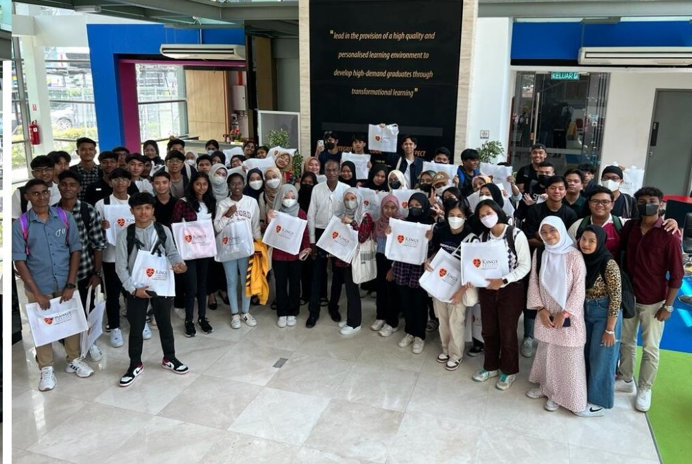
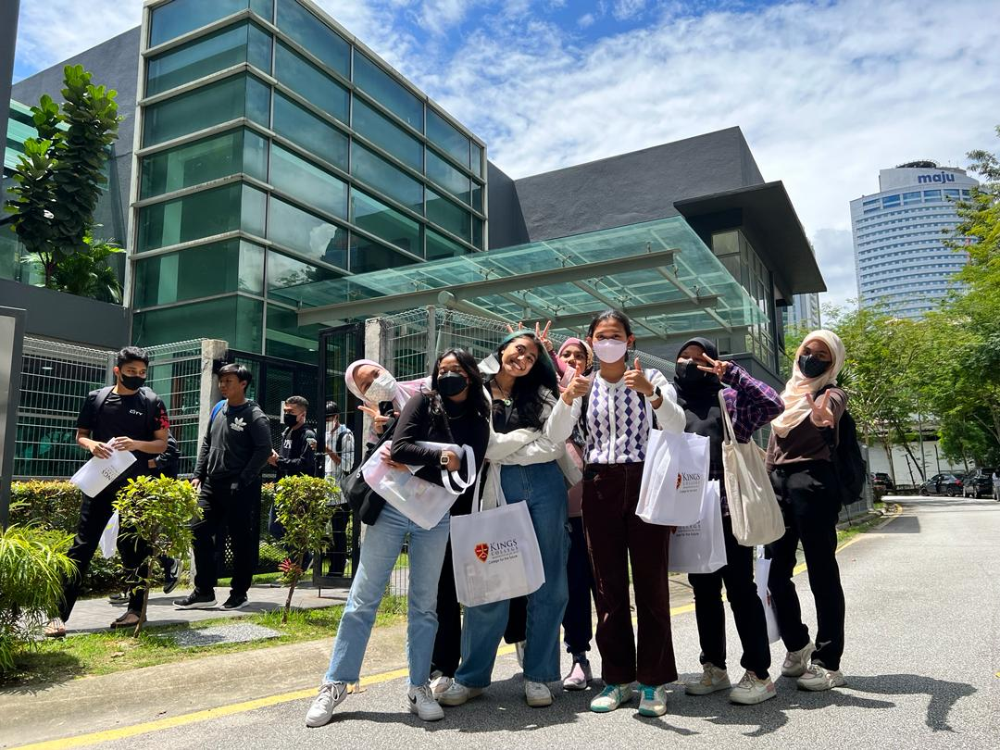
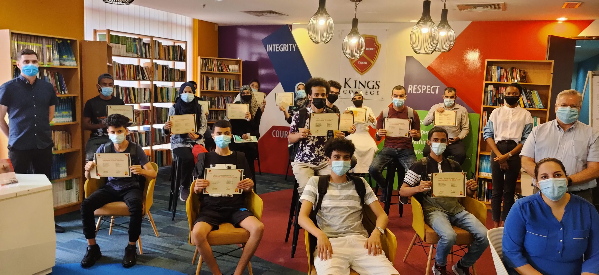

University overview
About Kings University College
King's University College (formerly Kolej Bandar) is a premier city campus located in the heart of Kuala Lumpur. It is renowned for its **"Work-Ready Philosophy"**, ensuring graduates are not just academically qualified but industry-prepared.
Partnering with global institutions and industry leaders, King's offers a unique **"Earn as you Learn"** program, allowing students to gain paid work experience while studying, particularly in Hospitality and Business.



International students
Study at Kings University College as an international student
Compare Kings University College courses, campuses, fees and entry requirements for your intended intake.
Programmes and tuition
Kings University College Kings courses and fees for international students
| No | Programme | Level | Duration | Year 1 (RM) | Year 2 (RM) | Year 3 (RM) | Total (RM) |
|---|---|---|---|---|---|---|---|
| 1 | Doctor of Philosophy in Management | PhD | 3 Years | 17,000 | 15,000 | 15,000 | 50,000 |
| 2 | Doctor in Business Administration (DBA) | PhD | 3 Years | 17,000 | 15,000 | 15,000 | 50,000 |
| 3 | Master of Education | Master | 1 Year | 17,000 | 9,000 (Sem 2) | 9,000 (Sem 3) | 29,000 |
| 4 | Master of Business Administration (Dual Degree UWS) | Master | 1 Year | 17,000 | 9,000 (Sem 2) | 9,000 (Sem 3) | 29,000 |
| 5 | Master of Business Administration (MQA/FA 16519) | Master | 1 Year | 17,000 | 9,000 (Sem 2) | 9,000 (Sem 3) | 29,000 |
| 6 | Bachelor in AI | Bachelor | 3 Years | 17,000 | 12,000 | 13,000 | 45,000 |
| 7 | BBA | Bachelor | 3 Years | 17,000 | 12,000 | 13,000 | 45,000 |
| 8 | Bachelor in Accounting | Bachelor | 3 Years | 17,000 | 12,000 | 13,000 | 45,000 |
| 9 | Bachelor in Law Enforcement | Bachelor | 3 Years | 17,000 | 12,000 | 13,000 | 45,000 |
| 10 | Bachelor in Early Childhood Education | Bachelor | 3 Years | 17,000 | 12,000 | 13,000 | 45,000 |
| 11 | Bachelor in Psychology | Bachelor | 3 Years | 17,000 | 12,000 | 13,000 | 45,000 |
| 12 | Diploma in Accounting | Diploma | 2.5 Years | 16,000 | 5,000 | 5,000 | 29,000 |
| 13 | Diploma in Law Enforcement | Diploma | 2 Years | 16,000 | 10,000 | - | 29,000 |
| 14 | Diploma in Business Administration | Diploma | 2 Years | 16,000 | 10,000 | - | 29,000 |
| 15 | Diploma in Information System | Diploma | 2 Years | 16,000 | 10,000 | - | 29,000 |
| 16 | Diploma in Hotel Management / (WBL) | Diploma | 2.5 Years | 16,000 | 5,000 | 5,000 | 29,000 |
| 17 | Diploma in Early Childhood Education | Diploma | 2.5 Years | 16,000 | 5,000 | 5,000 | 29,000 |
| 18 | Diploma in Psychology | Diploma | 2.5 Years | 16,000 | 5,000 | 5,000 | 29,000 |
Schedule remarks:
Initial Payment Requirements:
• EMGS Fee: RM 3,000 (Required for all programs)
Important Notes:
• All first-year fees must be settled in full prior to arrival in Malaysia.
• First-year fees are strictly non-refundable once the student has entered Malaysia.
• For Master's programs, fees are broken down into three semester payments.
Download fee schedule (PDF)
Stored fee document for King's University. Check the printed validity and terms.
King's University College rankings: QS World, Asia & Malaysia
Verified . Each figure below names its ranking edition.
- QS World 2027
- Not listed
- QS Asia 2026
- Not verified
- Malaysia · QS World 2027
- Not listed
This entry is King's University College in Malaysia. A ranking for King's College London does not apply to it.
“Not listed” refers to the named QS table. “Not verified” means we could not confirm a position for that edition; it does not establish that the institution is unaccredited.
Malaysia positions are calculated among the 32 institutions listed by QS under Malaysia in its World 2027 table. This is not a separate government ranking. An = sign marks a tie. Institutions in the same world-rank band share a national position range because their exact order is not published.
QS World and QS Asia use different methods. Overall university positions do not establish the ranking of a particular BBA, IT, MBA or other program.
Explore the campus
Campus gallery
Questions and answers
Frequently Asked Questions About Kings University College Kings
View ranking sources
QS World University Rankings 2027 - official results spreadsheet (v1.1) · QS World University Rankings 2027 - release corrections · QS Asia University Rankings 2026 - Malaysia
What is the QS World ranking of King's University College in 2027?
King's University College has no institution entry in the published QS World University Rankings 2027 table.
Sources: QS World University Rankings 2027 - official results spreadsheet (v1.1) · QS World University Rankings 2027 - release corrections
What is the QS Asia ranking of King's University College in 2026?
A QS Asia University Rankings 2026 position for King's University College has not been verified in our sources.
What is the ranking of King's University College in Malaysia?
King's University College has no separate Malaysia position in the QS World 2027 table because it has no institution entry listed under Malaysia. This is a position within the QS World table, not a separate government ranking or a QS Asia position.
Sources: QS World University Rankings 2027 - official results spreadsheet (v1.1) · QS World University Rankings 2027 - release corrections
Do QS Stars, SETARA or partner rankings give King's University College an overall QS rank?
QS Stars and SETARA are ratings, not numerical positions in a QS league table. A subject ranking applies to that subject, and a partner university rank belongs to the named partner. Check the institution, ranking system and edition before comparing.
Sources: QS Stars rating system
What are King's University College's tuition fees for international students?
Find your program and campus in the fee chart on this page, then read the relevant student category, fee columns and remarks. The schedule uses labels including Year 1 (RM), Year 2 (RM), Year 3 (RM), Total (RM). Different programs and fee periods cannot be combined into one reliable tuition price. Amounts not shown need an intake-specific quotation.
What are King's University College's tuition fees for Bangladeshi students?
Bangladeshi applicants should check the international-student rate for their program and intake. This page does not establish a separate Bangladesh-only tuition rate or guarantee eligibility for a discount. Check nationality-specific charges, deposits, visa costs and scholarship conditions in the schedule and your written offer.
Does the King's University College fee chart show fees per semester or per year?
Use the exact period printed in each column. A first-year payment, fee per semester and full-program total describe different costs. Where a semester or annual breakdown is absent, request a payment schedule; dividing a program total can give the wrong instalment amount.
Where can I find the official King's University College fee chart?
The download links on this page open the stored fee documents. One-Step is a student guidance website. Confirm the document's edition, campus, student category and validity with the university before accepting an offer or paying. The university's current written fee schedule and offer determine the amount payable.
Which year do the King's University College fees apply to?
Use any effective dates and intake restrictions stated in the fee documents and course remarks. A single validity year has not been confirmed for every table on this page. A recent page update does not mean all underlying fees are for the current year.
Does King's University College offer scholarships for international students?
Check any scholarship, adjusted tuition or discount columns alongside their conditions. A listed reduction is not an automatic award for every international or Bangladeshi applicant. Ask for the scholarship name, eligibility, application deadline, renewal conditions and final payable fee in writing.